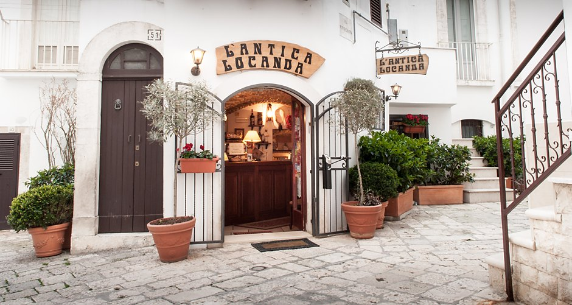
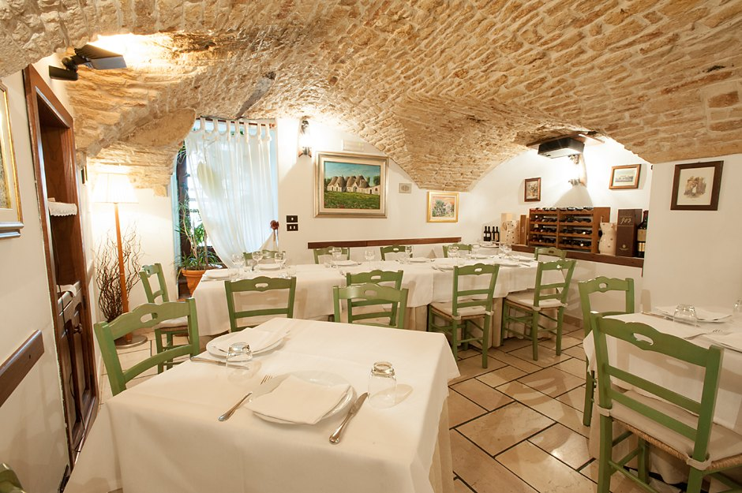
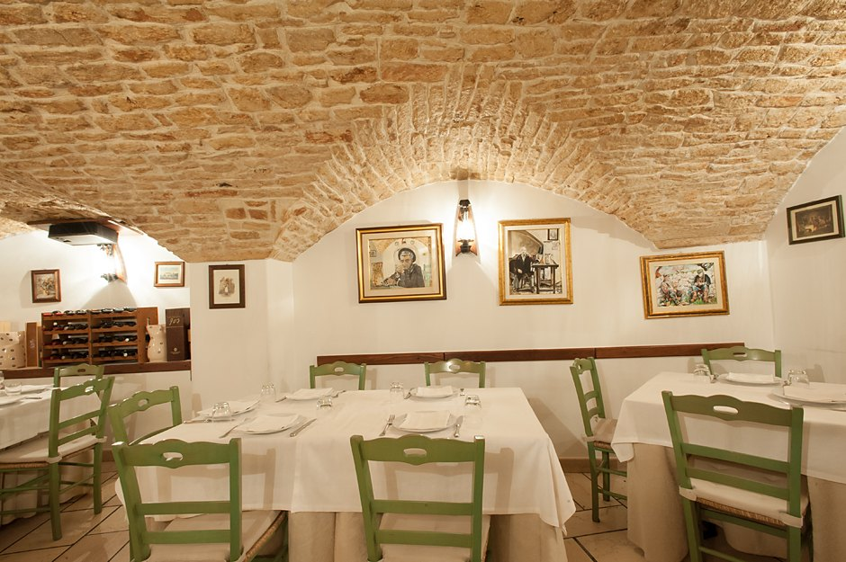
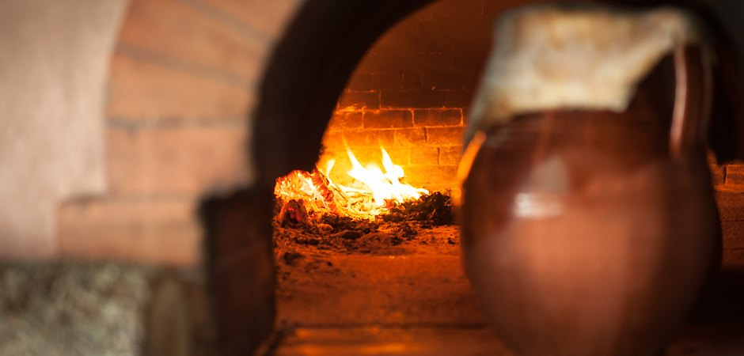
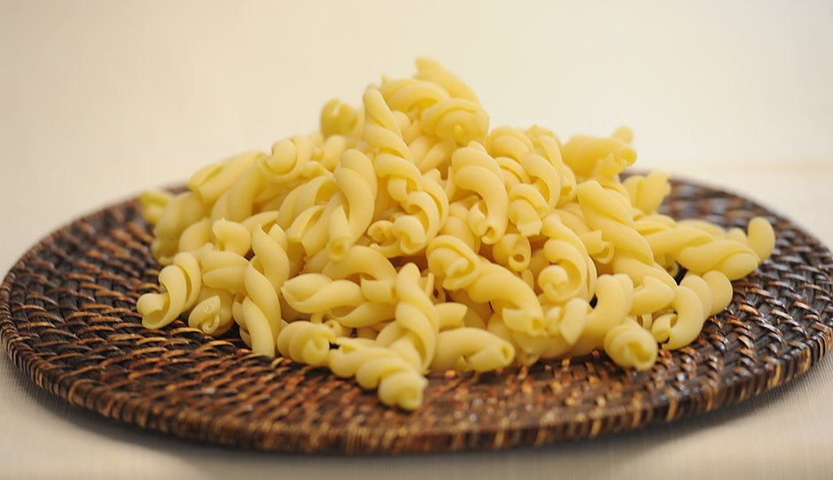
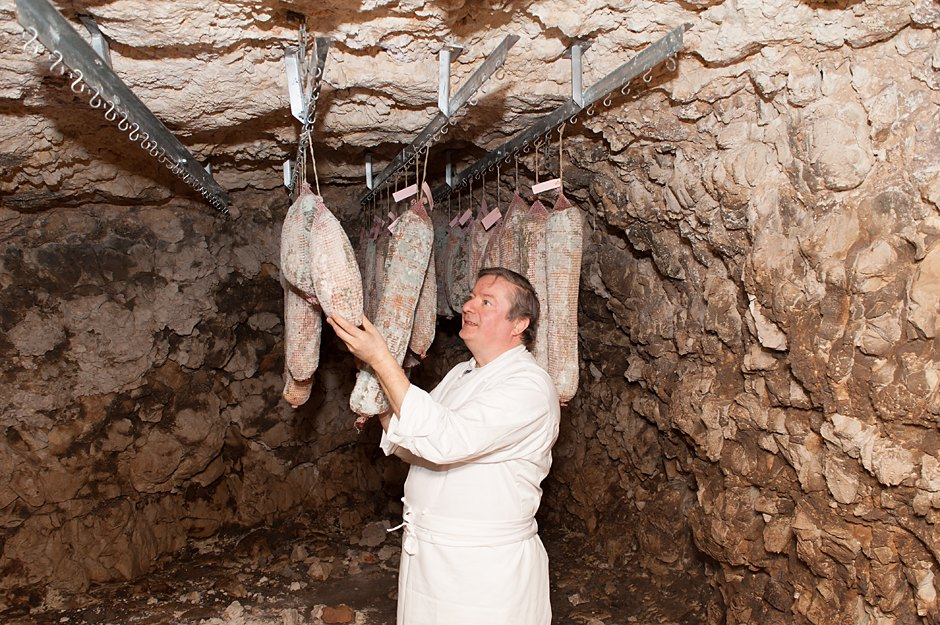

Noci, in provincia di Bari
L'Antica Locanda
Osteria del Settecento, nel centro storico
Un ambiente in pietra all'ingresso del centro storico, in una graziosa piazzetta. In cucina c'è Pasquale Fatalino dal 1996.
Aperto 12.00 – 15.00 e 20.00 – 23.30 · chiuso il martedì e la domenica sera

L'ingresso, in una piazzetta del centro storico di Noci.
Il posto
Si mangia dentro la pietra
Da storica cantina a tipica osteria del Settecento, fino a quando nel 1996 lo chef Pasquale Fatalino decide di mettere a frutto la sua passione per la cucina. Varcata la soglia, le sale sono volte di conci di pietra a vista.


La cucina
Cosa si mangia
Ingredienti stagionali come le cicorielle, i cardi selvatici, i funghi della Murgia, i lampascioni, le cime di rapa, sono preparati secondo metodi di cottura tradizionali che ne esaltano i profumi e i sapori.
La pasta, rigorosamente fatta in casa, si sposa bene con le verdure stagionali e con una spolverata di cacioricotta, tipico formaggio pugliese.
L'agnello, il vitello e la pecora vengono cotti lentamente in pignata insieme alle erbe del territorio, per conferire alla carne un gusto ancora più autentico.
- Cicorielle
- Cardi selvatici
- Funghi della Murgia
- Lampascioni
- Cime di rapa
- Cacioricotta

La pignata di terracotta sulla bocca del forno.

La pasta fatta in casa.
Il riconoscimento
Chiocciola Slow Food
2026
L'Antica Locanda è fra le Chiocciole della guida Osterie d'Italia di Slow Food, edizione 2026: ventiquattro locali in tutta la Puglia.
Chi cucina
Pasquale Fatalino

Nato a Noci nel 1960, comincia nel 1976 come apprendista all'Hotel Miramonte, in paese. Poi Bologna, dove lavora nei ristoranti della città, e ancora Venezia e Firenze.
Dall'aprile del 1996 è proprietario e chef de L'Antica Locanda.
Le foto
Il locale, dentro e fuori
Le fotografie provengono dal sito attuale de L'Antica Locanda e restano di proprietà dell'attività.
Dove siamo e quando
Via Spirito Santo, 49
- Indirizzo
Via Spirito Santo, 49
70015 Noci (BA)
Apri la mappa e le indicazioni - Telefono +39 080 497 2460
- Email info@pasqualefatalino.it